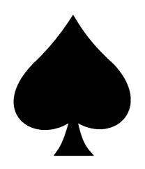
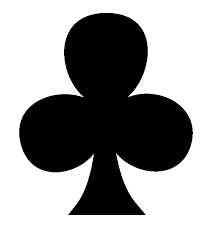

Truco Paulista
Regra única
Diferentemente do truco mineiro, após entregar as cartas para os jogadores, a última carta do baralho é virada, sendo isso importante para a definição das manilhas.
Ordem das cartas
A ordem das cartas no truco paulista se diferencie do mineiro apenas nas manilhas, sendo elas as cartas imediatamente maiores do que a virada. Por isso se torna importante o naipe dessas cartas seguindo a ordem do mais fraco para o mais forte:
 Ouros
Ouros-  Espadas
 Copas
Copas-  Paus
TRUCOO!!
Como você já ter ouvido, um dos principais ações do truco é simplesmente gritar truco, podendo tanto ser um blefe ou quando o jogador realmente possui cartas boas. Ao gritar truco cabe ao oponente a opção de pedir 6, ao fazer isso, o jogador que gritou truco pode pedir 9 e o oponente 12.
Valor das rodadas
| Normalmente | Ao pedir Truco | Ao pedir 6 | Ao pedir 9 | Ao pedir 12 | Ao aceitar: | 1 | 2 | 6 | 9 | 12 |
|---|---|---|---|---|---|
| Ao correr: | 1 | 1 | 2 | 6 | 9 |
Conclusão
Após toda essa lida, você já está pronto para começar a jogar truco, então que tal comecçar a pratica-lo? Aqui está um vídeo que irá o ajudar a rever as regras e alguns ensinamentos básicos.